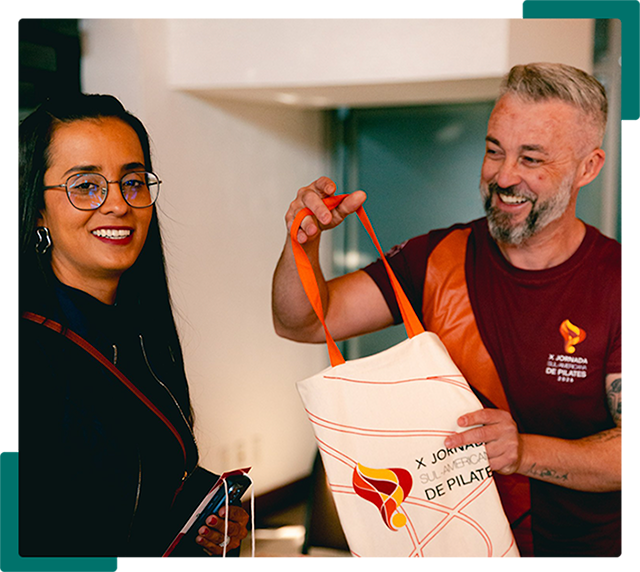

Seja um Staff Voluntário do
Encontro Brasileiro de Pilates
Aprenda, conecte-se e viva os bastidores do maior evento de Pilates do Brasil.
O Programa de Staff Voluntário do Encontro Brasileiro de Pilates é a oportunidade perfeita para quem deseja fazer parte da realização de um grande evento, adquirir experiência, ampliar sua rede de contatos e acompanhar de perto os principais profissionais do mercado.
Ao integrar nossa equipe, você vivenciará os bastidores do evento, colaborará diretamente com a organização e terá uma experiência única de aprendizado, desenvolvimento e conexão com a comunidade do Pilates.

O que é ser um Staff Voluntário?
Ser Staff Voluntário significa fazer parte da equipe responsável por proporcionar uma experiência incrível para centenas de participantes durante o Encontro Brasileiro de Pilates.
Os voluntários atuam apoiando diferentes atividades operacionais, institucionais e de atendimento, contribuindo para que palestras, workshops e demais ações do evento aconteçam de forma organizada e eficiente.
A participação acontece por meio de escalas de horários previamente definidas pela organização, permitindo que os Staffs colaborem ativamente com o evento e também vivenciem momentos de aprendizado ao longo da programação.
Todo o treinamento necessário para atuação é realizado de forma online antes do evento.
Quem pode participar?
O Programa de Staff Voluntário é destinado a pessoas apaixonadas pelo universo do Pilates e que desejam contribuir para a realização do evento.
- Ter idade mínima de 18 anos;
- Ser estudante ou profissional de Fisioterapia;
- Ser estudante ou profissional de Educação Física;
- Ser estudante ou profissional de Enfermagem;
- Ser estudante ou profissional de Marketing;
- Ser estudante ou profissional de Publicidade e Propaganda;
- Ou ser praticante do Método Pilates;
- Ter disponibilidade para cumprir as escalas definidas pela organização;
- Participar do treinamento online obrigatório.
Área de Atuação
Comunicação e Institucional
Os voluntários desta área atuam diretamente no suporte aos participantes e no apoio às atividades institucionais do evento.
Principais atividades:
- Orientação do público
- Captação de conteúdo para as redes sociais
- Apoio ao credenciamento
- Organização dos espaços do evento
- Atendimento aos participantes
- Suporte às atividades institucionais
- Auxílio à equipe organizadora durante a programação
Essa atuação é essencial para garantir uma experiência acolhedora, organizada e eficiente para todos os participantes.
Como funciona o programa?
Entre em contato com nossa equipe para receber mais informações
sobre o processo de seleção e disponibilidade de vagas.
-
Treinamento
OnlineTodos os Staffs selecionados participam de um treinamento online obrigatório, onde recebem informações sobre procedimentos, responsabilidades, atendimento ao público e funcionamento geral do evento.
-
Escalas de
AtuaçãoAs atividades são distribuídas em escalas organizadas pela equipe responsável, considerando a programação de workshops, palestras e demais atividades.
-
Experiência
PráticaDurante o evento, os voluntários trabalham lado a lado com a equipe organizadora, vivenciando os bastidores e contribuindo diretamente para o sucesso do encontro.